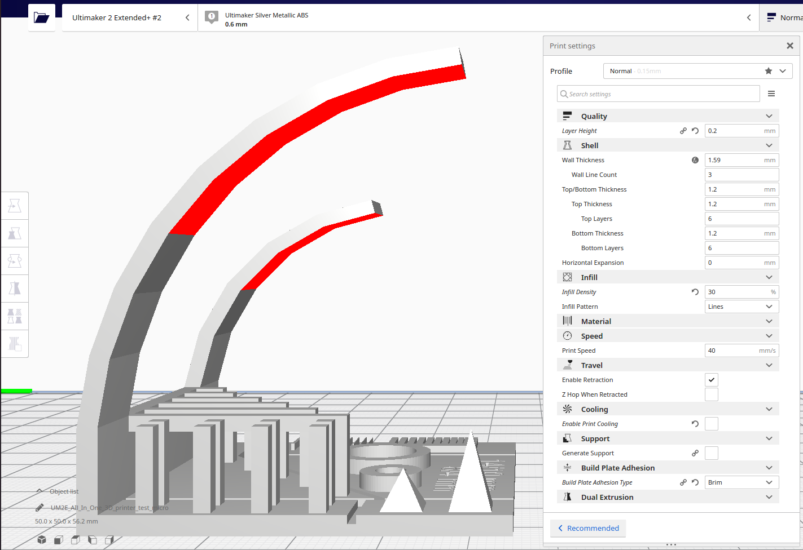

Project 3 - 3D print parameters estimation
The objective
The objective of this group project was to estimate the limitation of a 3D printer.
The test model
The model we used is from here.
Here is the model in Cura with the recomended parameters:
We followed the recomended settings from the maker of the model and the result was:
The result was that support was needed for overhangs over 40° and we tried to minimize small details in our models